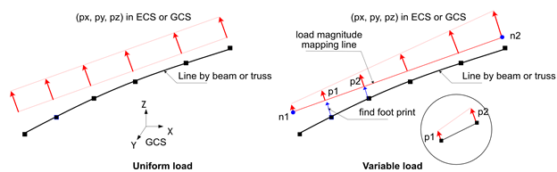
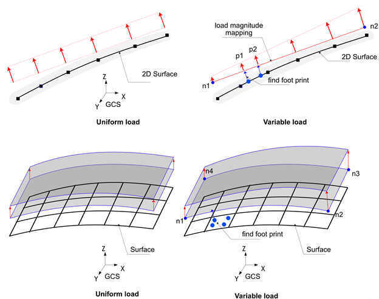
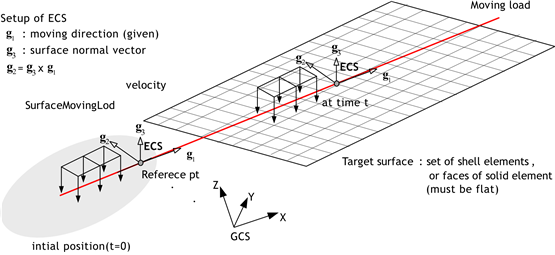
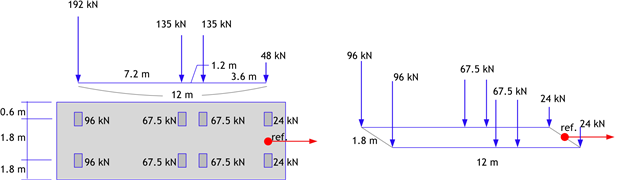
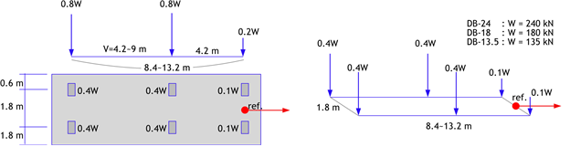
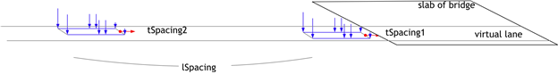

6. Load
The load is defined using *Load. Each load has a unique name, and duplicate names cannot be assigned. *Load is distinguished from *Constraint in that it specifies a certain load value to be applied within an analysis step. For example, a displacement load is defined as *Load, whereas a boundary condition with zero displacement (Support) is defined as *Constraint.
Loads can be applied either statically or dynamically (time-dependent). For instance, *Load, TYPE=Concentric, *Load, TYPE=Displacement, *Load, TYPE=Gravity, *Load, TYPE=Temperature, *Load, TYPE=LineDistributed, and *Load, TYPE=SurfaceDistributed are static loads when only their magnitudes are specified, but they become dynamic loads when a time function is provided. In contrast, *Load, TYPE=LineMoving, *Load, TYPE=SurfaceMoving, *Load, TYPE=PedestrianMoving, and *Load, TYPE=Earthquake cannot be applied statically and are always time-dependent loads.
When a load is applied within an analysis step (*Step), it can exist in three states: Created, Propagated, and Faded. Created means that the load is generated in the current analysis step, Propagated means that the load was generated in a previous analysis step and is maintained in the current step, and Faded means that the load is removed in the current step. The state and application of a load differ depending on whether it is a static or dynamic load and whether the analysis step depends on physical time.
▪ Time-dependent Analysis Steps
- Includes Quasi-static analysis (
*Step, TYPE=Static, Quasi) and Dynamic analysis (*Step, TYPE=Dynamic). - Only Created and Propagated states are allowed, and their behavior is the same in both states.
- The Faded state cannot exist (the load is immediately deleted when deactivated).
- Static loads are applied with the specified magnitude, independent of time changes within the analysis step.
- Dynamic loads are applied according to the time defined in the analysis step.
▪ Static Analysis Steps
- Includes Static analysis (
*Step, TYPE=Static,*Step, TYPE=Static, Arclength) where the load is applied based on a load factor. - Static loads in the Created state are applied according to the load factor.
- Dynamic loads in the Created state are not applied (there is no physical time flow).
- In the Propagated state, the final load from the previous step is maintained.
- In the Faded state, the final load from the previous step is reduced to zero by the end of the current analysis step.
- Temperature loads (
*Load, TYPE=Temperature) cannot be in the Created or Faded states in a*Step, TYPE=Static, Arclengthanalysis step.
*Load
Define load
*Load, Type=load_type, Name=load_name, ...
...
Keyword line
- Type=type: Type of load
- Concentric: Concentrated load applied to a node
- Displacement: Displacement load with a non-zero value
- SeismicRelative: Seismic acceleration time history load based on relative motion formulation
- Gravity: Self-weight due to gravitational acceleration
- Temperature: Load induced by temperature changes acting on an element
- LineDistributed: Distributed load applied to a line composed of beam or truss elements
- LineMoving: Moving load applied to a line composed of beam or truss elements
- SurfaceDistributed: Distributed load applied to a surface formed by elements
- SurfaceMoving: Moving load applied to a surface formed by elements
- PedestrianMoving: Pedestrian load applied to a surface formed by elements
- Name=load_name: Name of the load
*Load, Type=Concentric
Concentrated load applied to a node
*Load, Type=Concentric, Name=name, Func=timeFunction
targetNode, oneDof, value, fnIdx, CS=orientation
targetNset, oneDof, value, fnIdx, CS=orientation
targetSurface, oneDof, value, fnIdx, CS=orientation
...
Keyword line
- Func=timeFunction: Time function to be used for time-dependent analysis (
*Step, Type=Static, Quasiand*Step, Type=Dynamic) (optional).
First dataline and subsequent datalines
- targetNode: Target node (required)
- targetNset: Target nset (required). Nodes within the nset are the target.
- targetSurface: Target surface (required). Nodes within the surface are the target.
- oneDof: Degree of Freedom (DOF) to be targeted. The DOF can be X, Y, Z, RX, RY, RZ, P, etc. Combinations like X|Y are not allowed. (required)
- value: Value (required)
- fnIdx: Index of the time series function within
timeFunction(1-based index) (optional, default is 1). - CS=orientation: Coordinate system in which the concentric load is applied. Specify the name defined via
*CoordinateSystem, TYPE=Orientation. If omitted, the global coordinate system (GCS) is used. (optional)
In each data line, the first entry is interpreted in the order: targetNset, targetSurface, then targetNode. Since both nset and surface are specified as strings, care should be taken when naming them. If the same nodal degree of freedom is specified multiple times, no error is raised; the corresponding loads are combined and applied cumulatively.
When a local coordinate system is specified, the given load is interpreted relative to that coordinate system. Internally, the load is transformed and applied in the global coordinate system (GCS). Output results are provided in the GCS by default. If results are needed in the local coordinate system, this must be explicitly specified in the *Print or *History commands. The *Output command does not support specifying a local coordinate system, but hfVisualizer allows postprocessing and conversion of results into a local coordinate system.
Example
*Load, Type=Concentric, Name=A
1001, X, 10.
*Funtion, TYPE=MultiLinear, Name=Cyclic
0, 0
1, 1
2, 0
3, 1
4, 0
*Load, Type=Concentric, Name=B, Func=Cyclic
base, X, 10.
*Funtion, TYPE=TimeSignal, Name=timeLoad
0.02, 1024 # dt, ntime
elcenX.dat, 1, 3.01
elcenYZ.dat, 2, 3.01
*Load, Type=Concentric, Name=TimeLoading, Func=timeLoad
101, X, 1, 1
101, Y, 1, 2
101, Z, 1, 3
*CoordinateSystem, TYPE=Orientation, Name=inc
1,1,0, 0,1,0
*Load, Type=Displacement Name=InclinedLoad
101, X, 1. CS=inc
*Load, Type=Displacement
Nodal displacement
*Load, Type=Displacement, Name=name, Func=timeFunction, CS=orientation
targetNode, oneDof, value, {fnIdxD, fnIdxV, fnIdxA}|D=fnIdxD|V=fnIndxV|A=fnIndxA, CS=orientation
targetNset, oneDof, value, {fnIdxD, fnIdxV, fnIdxA}|D=fnIdxD|V=fnIndxV|A=fnIndxA, CS=orientation
targetSurface, oneDof, value, {fnIdxD, fnIdxV, fnIdxA}|D=fnIdxD|V=fnIndxV|A=fnIndxA, CS=orientation
...
Keyword line
- Func=timeFunction: Time function to be used for time-dependent analysis (
*Step, Type=Static, Quasiand*Step, Type=Dynamic) (optional).
First dataline and subsequent datalines
- targetNode: Target node (required)
- targetNset: Target nset (required). Nodes within the nset are the target.
- targetSurface: Target surface (required). Nodes within the surface are the target.
- oneDof: Degree of Freedom (DOF) to be targeted. The DOF can be X, Y, Z, RX, RY, RZ, P etc. Combinations like X|Y are not allowed. (required)
- value: Value (required)
- fnIdxD, fnIdxV, fnIdxA: Index of the time series function within
timeFunctionfor displacement, velocity, and acceleration respectively (1-based index) (optional, default is 1). If 0 is specified, the values of the corresponding history is always treated as 0. Displacement is used for*Step, Type=Static, Quasi, and displacement, velocity, and acceleration are used for*Step, Type=Dynamic. - A=fnIdxA: Index of the acceleration time function in
timeFunction(1-based index). Velocity and displacement functions are automatically integrated. timeFunction should be defined by*Function, TYPE=TimeSignal. - V=fnIdxV: Index of the velocity time function in
timeFunction(1-based index). Acceleration and displacement functions are automatically differentiated and integrated. timeFunction should be defined by*Function, TYPE=TimeSignal. - D=fnIdxD: Index of the displacement time function in
timeFunction(1-based index). Velocity and acceleration functions are automatically differentiated. timeFunction should be defined by*Function, TYPE=TimeSignal. - CS=orientation: Coordinate system in which the displacement load is applied. Specify the name defined via
*CoordinateSystem, TYPE=Orientation. If omitted, the global coordinate system (GCS) is used. (optional)
In each data line, the first entry is interpreted in the order: targetNset, targetSurface, then targetNode. Since both nset and surface are specified as strings, care should be taken when naming them. If the same nodal degree of freedom is specified multiple times, no error is raised; the corresponding loads are combined and applied cumulatively.
Time histories obtained by differentiation or integration using A=fnIdxA, V=fnIdxV, or D=fnIdxD are output to a file named name-generated.csv.
When a local coordinate system is specified, the given load is interpreted relative to that coordinate system. Internally, this is handled by imposing a multi-point constraint (MPC). Output results are provided in the GCS by default. If results are needed in the local coordinate system, this must be explicitly specified in the *Print or *History commands. The *Output command does not support specifying a local coordinate system, but hfVisualizer allows postprocessing and conversion of results into a local coordinate system.
Example
*Load, Type=Displacement Name=A
1001, X, 10.
*Load, Type=Displacement, Name=C
101, X, 100
101, X, 200 # Rasing error
*Funtion, TYPE=MultiLinear, Name=Cyclic
0, 0
1, 1
2, 0
3, 1
4, 0
*Load, Type=Displacement Name=B, Func=Cyclic
base, X, 10.
*Funtion, TYPE=TimeSignal, Name=motion
0.02, 1024 # dt, ntime
elcenD.dat, 1, 3.01
elcenVA.dat, 2, 3.01
*Load, Type=Displacement Name=B Func=motion
base, X, 1, 1, 2, 3
*Load, Type=Displacement Name=B Func=motionB
baseB, X, 1, A=1 # V, D is generated
*CoordinateSystem, TYPE=Orientation, Name=inc
1,1,0, 0,1,0
*Load, Type=Displacement Name=InclinedLoad
101, X, 1. CS=inc
*CoordinateSystem, TYPE=Orientation, Name=inc
1,1,0, 0,1,0
*Load, Type=Displacement Name=InclinedLoad
101, X, 0.1, CS=inc
*Load, Type=SeismicRelative
Seismic acceleration time history load based on relative motion formulation
*Load, Type=Earthquake, Name=name, Func=timeFunction
x, y, z, fnIdx
...
Keyword line
- Func=timeFunction: Seismic acceleration history (required)
First dataline and subsequent datalines
- x, y, z: Directional vector of applying acceleration history. The input vector is normalized to have a magnitude of 1.
- fnIdx: Index of the time series function within
timeFunction(1-based index) (optional, default is 1).
*Load, Type=SeismicRelative is only applicable to dynamic analysis, and the calculated response represents relative motion with respect to the input ground motion. It is important to note that the response calculated with *Load, TYPE=SeismicRelative is a relative response, unlike the absolute response computed when applying motion to a support point as total motion using *Load, TYPE=Displacement.
In *Load, TYPE=SeismicRelative, the external force acts as follows:
It is also applicable to models using acoustic solid elements, in which case it is as follows:
Example
*Function Type=TimeSignal Name=acc1d
0.02, 2670
BaseMotionX.inp, 1, 1 # file, nseries, scalFactor
*Load, Type=SeismicRelative, Name=Earthquake1D, Func=acc1d
1,0,0
*Function Type=TimeSignal Name=acc3d
0.02, 2670
BaseMotionX.inp, 1, 1 # file, nseries, scalFactor
BaseMotionY.inp, 1, 1 # file, nseries, scalFactor
BaseMotionZ.inp, 1, 1 # file, nseries, scalFactor
*Load, Type=SeismicRelative, Name=Earthquake3D, Func=acc3d
1,0,0,1
0,1,0,2
0,0,1,3
*Load, Type=Gravity
Self-weight due to gravitational acceleration
*Load, Type=Gravity Name=name Func=timeFunction
targetElset, gx, gy, gz, fnIdx
...
Keyword line
- Func=timeFunction: Time function to be used for time-dependent analysis (
*Step, Type=Static, Quasiand*Step, Type=Dynamic) (optional). If the function has multiple series, the first series is used.
First dataline and subsequent datalines
- targetElset: Target elset (required)
- gx, gy, gz: Gravity vector (optional, default is 0,0,0)
- fnIdx: Index of the time series function within
timeFunction(1-based index) (optional, default is 1).
To activate the Gravity Load, the elements must have mass properties defined in their material properties.
Example
*Load, Type=Gravity Name=SelfWeight
Slab, 0. 0. -9.81
Girder, 0. 0. -9.81
*Load, Type=Temperature
Load induced by temperature changes acting on an element
*Load, Type=Temperature, Name=name Func=timeFunction
targetElset, T, Ty, Tz, fnIdx
...
Keyword line
- Func=timeFunction: Time function to be used for time-dependent analysis (
*Step, Type=Static, Quasiand*Step, Type=Dynamic) (optional). If the function has multiple series, the first series is used.
First dataline and subsequent datalines
- targetElset: Target elset (required)
- T, Ty, Tz: Temperature and temperature gradient change (optional, default is 0,0,0)
- fnIdx: Index of the time series function within
timeFunction(1-based index) (optional, default is 1).
Used when a uniform temperature change is applied to the elements.
▪ Caution
- Temperature loads cannot be Activated or Inactivated in
*Step, TYPE=Static, Arclength. However, if applied in a previous analysis step, the magnitude can be maintained. That is, only thePropagatedstate is allowed;
Example
*Load, Type=Temperature Name=A
beam, 10.
*Load, Type=LineDistributed
Distributed load applied to a line composed of beam or truss elements
*Load, Type=LineDistributed, Name=name, Func=timeFunction
line, GCS|ECS, px, py, pz, mx, my, mz, fnIdx
line, GCS|ECS, n1, n2, px1, py1, pz1, mx1, my1, mz1, px2, py2, pz2, mx2, my2, mz2, fnIdx
...
Keyword line
- Func=timeFunction: Time function to be used for time-dependent analysis (
*Step, Type=Static, Quasiand*Step, Type=Dynamic) (optional). If the function has multiple series, the first series is used.
First dataline and subsequent datalines
- line: Elset composed of beam or truss elements (required)
- GCS|ECS: Coordinate system of the given load
- px, py, pz, mx, my, mz: Uniformly distributed load (px, py, pz are orthogonal directional loads, mx, my, mz are moments). For 2D beams, px, py, and mz are used. For truss elements, all components except px are ignored.
- n1, n2, px1, ..., mz2: Applied distributed load with magnitudes of px1~mz1 and px2~mz2 at nodes n1 and n2, respectively. The load between these two points is interpolated using shape functions.
- fnIdx: Index of the time series function within
timeFunction(1-based index) (optional, default is 1).
The line must consist of either beam elements or truss elements only (mixed use is not allowed) and does not need to be a continuous line. For truss elements, the ECS option is ignored because only the axial direction can be defined in the ECS coordinate system.
When applying the load in a trapezoidal shape, the magnitude of the load at each node of the line segment is mapped according to the values specified at nodes n1 and n2, as illustrated in the figure.

Fig. 6.2-1. Line Distributed Load
Example
*Load, Type=LineDistributed, Name=Load1
side1, GCS, 0.,10.,1.
*Load, Type=LineDistributed Name=Load2
side1, ECS, 1, 2, 10.,0.,0.,0,0,0, 20.,0.,0. 0,0,0
*Load, Type=LineDistributed,ECS Name=Load3
side1, ECS, 10.
side2, ECS, 0.,10.,1.,0,0,0
side3, ECS, 1, 2, 10.,0.,0.,0,0,0,20.,0.,0.,0,0,0
*Load, Type=LineMoving
Moving load applied to a line composed of beam or truss elements
# Direct form : When defining the load directly
*Load, Type=LineMoving, Name=name
speed, line1, line2, direction, s0, y0, z0
s, y, z, Px, Py, Pz, Mx, My, Mz
...
# KL-510 form : When generating KL-510 loads according to design standards
*Load, Type=LineMoving, Name=name
speed, line1, line2, direction, s0, y0, z0
KL-510, unit, ax, ay, az{, ToDirectForm}
lSpacing, tSpacing1, tSpacing2, ...
# DB-24, DB-18, DB-13.5 form : When generating DB-24, DB-18, DB-13.5 loads according to design standards
*Load, Type=LineMoving, Name=name
speed, line1, line2, direction, s0, y0, z0
DB-24|DB-18|DB-13.5, unit, ax, ay, az{, ToDirectForm}
lSpacing, tSpacing1, tSpacing2, ...
aSpacing1, aSpacing2, ...
First dataline
- speed: Speed (required)
- line1, line2: Elsets composed of beam or truss elements (line1 is required, and line2 is optional). line2 is only used in Direct form.
- direction: Moving load travel direction. Can be
forwardorbackward. Default isforward. - s0: Reference distance. Defined as the distance from the start point of the target beam/truss elset. Default is 0.
- y0, z0: Initial offset in the cross-section of the beam element in the ECS. Default is 0.
Second dataline and subsequent lines for Direct form
- s: Distance from the reference point (required). The load is applied at the
s0 + sdistance from the start point of the target beam/truss elset. - y, z: Additional offset in the cross-section of the beam element in the ECS (required). The total offset is calculated as y + y0, z + z0.
- Px, Py, Pz, Mx, My, Mz: Load vector in the global coordinate system. Mx, My, and Mz are ignored if the line segment is not a beam. (optional, but at least one component must be specified. Default is 0,0,0,0,0,0).
Second dataline for KL-510, DB-24, DB-18, DB-13.5 form
- unit: Unit used in the input file, specified in the force-length format (e.g., N-m).
- ax, ay, az: Directional vector of the axial load in the GCS. If it is not a unit vector, it will be normalized. For example, (0,0,-1) indicates the direction opposite to gravity.
- ToDirectForm: If specified, the load is converted and saved as a Direct form.
Third dataline for KL-510, DB-24, DB-18, DB-13.5 form
- lSpacing: Longitudinal spacing distance between multiple transverse spacings, indicating the distance between each individual vehicle load in the direction of travel.
- tSpacing1, tSpacing2, ...: Transverse spacing distances. At least one transverse spacing must be specified, and individual vehicle loads are generated at these spacings along with
lSpacing.
Fourth dataline for DB-24, DB-18, DB-13.5
- aSpacing1, aSpacing2, ...: Last axle spacing. At least one must be specified, and the value should be between 4.2-9.0m. The number of specified axle spacings determines how many moving loads are added, considering
lSpacing,tSpacing1,tSpacing2, etc.
LineMoving load specifies a moving load applied to a line composed of beam elements or truss elements. It can be defined in two main forms: Direct form and Generation form. In Direct form, the user directly specifies the axle loads that make up the moving load, while Generation form, such as KL-510, DB-24, etc., generates the moving load based on design standards.
The LineMoving load changes the position of the load according to the given speed. For dynamic analysis (*Step, Type=Dynamic) or time-dependent static analysis (*Step, Type=Static, Quasi), the position is updated based on the speed. In other analysis conditions, the position does not change (no movement in general static analysis). The line must consist only of beam elements or only of truss elements (mixing of both types is not allowed), and it must form a continuous single line.

Fig. 6.2-2. Line Moving Load
For loads like railway loads that traverse two lines, two lines can be specified. In this case, the two lines must be parallel and of equal length. If two lines are specified, the given load is equally distributed (1/2) between each line.
For detailed explanations of the Generation forms such as KL-510, DB-24, etc., refer to *Load, TYPE=SurfaceMoving.
Example
*Load, Type=LineMoving Name=L1
10, L1
0., 0., 0., 0.,0.,10.
-1., 0., 0., 0.,0.,20.
-3., 0., 0., 0.,0.,20.
*Load, Type=LineMoving, Name=L2
10., L1
0.. 0., 0., 0.,0.,-10.,0.,0.,10.
-1.. 0., 0., 0.,0.,-20.,0.,0.,20.
-3.. 0., 0., 0.,0.,-20.,0.,0.,20.
*Load, Type=LineMoving, Name=L3
10., L1, forward, -2, 0, 1.5
KL-510, kN-m, 0, 0, -1
100, -0.5, 0.5
*Load, Type=LineMoving, Name=L4
10., L1, reverse, -3, 0, 1.5
DB-24, kN-m, 0, 0, -1
100, -0.5, 0.5
4.2, 9.0
*Load, Type=SurfaceDistributed
Distributed load applied to a surface formed by elements
*Load, Type=SurfaceDistributed, Name=name, Func=timeFunction
surface, Pressure, p, fnIdx
surface, Pressure, n1, n2, p1, p2, fnIdx
surface, Pressure, n1, n2, n3, p1, p2, p3, fnIdx
surface, Pressure, n1, n2, n3, n4, p1, p2, p3, p4, fnIdx
surface, Traction, tx, ty, tz, fnIdx
surface, Traction, n1, n2, tx1, ty1, tx2, ty2, fnIdx
surface, Traction, n1, n2, n3, tx1, ty1, tz1, tx2, ty2, tz2, tx3, ty3, tz3, fnIdx
surface, Traction, n1, n2, n3, n4, tx1, ty1, tz1, tx2, ty2, tz2, tx3, ty3, tz3, tx4, ty4, tz4, fnIdx
surface, AcousticFlux, p, fnIdx
surface, AcousticFlux, n1, n2, p1, p2, fnIdx
surface, AcousticFlux, n1, n2, n3, p1, p2, p3, fnIdx
surface, AcousticFlux, n1, n2, n3, n4, p1, p2, p3, p4, fnIdx
...
Keyword line
- Type=SurfacePressure|SurfaceTraction: Specifies whether the load is pressure or traction.
- Func=timeFunction: Time function to be used for time-dependent analysis (
*Step, Type=Static, Quasiand*Step, Type=Dynamic) (optional). If the function has multiple series, the first series is used.
First dataline
- surface: Target surface.
- Pressure|Traction|AcousticFlux: Indicates pressure, traction, or acoustic flux load.
- p: Uniform pressure.
- n1, n2, p1, p2: Applies pressures p1 and p2 at nodes n1 and n2, respectively, and interpolates between them. Applicable for 2D surfaces (surfaces formed by the faces of 2D solid elements).
- n1, n2, n3, p1, p2, p3: Applies pressures p1, p2, and p3 at nodes n1, n2, and n3, respectively, and interpolates between them using triangular shape functions. Applicable for 3D surfaces (surfaces formed by the faces of 3D solid elements or shell elements).
- n1, n2, n3, n4, p1, p2, p3, p4: Applies pressures p1, p2, p3, and p4 at nodes n1, n2, n3, and n4, respectively, and interpolates between them using quadrilateral shape functions. Applicable for 3D surfaces.
- tx, ty, tz: Uniform traction load. tz is neglected for 2D surfaces.
- n1, n2, tx1, ty1, tx2, ty2: Variable traction for 2D surfaces.
- n1, n2, n3, tx1, ty1, tz1, tx2, ty2, tz2, tx3, ty3, tz3: Variable traction for 3D surfaces. Interpolated using triangular shape functions.
- n1, n2, n3, tx1, ty1, tz1, ..., tx4, ty4, tz4: Variable traction for 3D surfaces. Interpolated using quadrilateral shape functions.
- fnIdx: Index of the time series function within
timeFunction(1-based index) (optional, default is 1).
This is a distributed load applied to a surface formed by the faces of elements. Surfaces can be composed of either the faces of 2D solid elements or the faces of 3D solid elements, but the two types cannot be mixed. Applicable loads include pressure, which acts in the opposite direction of the surface normal, and traction, which is defined in the GCS (Global Coordinate System).
In addition to uniform loads, variable distributed loads can also be applied. When applying variable loads, the load magnitude can be defined at the corner nodes of the mapping surface, as shown in the figure. Each element face is projected onto the mapping surface based on the integration points specified by the option *Control, NonsmoothIntegrationLevel=level, and the load magnitude is calculated and integrated accordingly. For a 4-node face, the default is to use a 5x5 grid of integration points.
When multiple datalines are specified, Pressure and Traction can be mixed because they represent the same physical force per unit area, but they cannot be mixed with AcousticFlux.

Fig. 6.2-3. Surface Distributed Load
Example
*Surface, Name=surface1
1@slab1
*Surface, Name=surface2
1@slab2
*Load, Type=SurfaceDistributed, Name=load1
surface1, Pressure, 10
*Load, Type=SurfaceDistributed, Name=load2
surface1, Pressure, 10
surface2, Pressure, 1, 10, 11, 2, 0,0, 10, 10
*Load, Type=SurfaceMoving
Moving load applied to a surface formed by elements
# Direct form : When defining the load directly
*Load, Type=SurfaceMoving, Name=name
speed, surface, vx, vy, vz, rx, ry, rz, tol
x, y, Px, Py, Pz
...
# KL-510 form : When generating KL-510 loads according to design standards
*Load, Type=SurfaceMoving, Name=name
speed, surface, vx, vy, vz, rx, ry, rz, tol
KL-510, unit, ax, ay, az{, ToDirectForm}
lSpacing, tSpacing1, tSpacing2, ...
# DB-24, DB-18, DB-13.5 form : When generating DB-24, DB-18, DB-13.5 loads according to design standards
*Load, Type=SurfaceMoving, Name=name
speed, surface, vx, vy, vz, rx, ry, rz, tol
DB-24|DB-18|DB-13.5, unit, ax, ay, az{, ToDirectForm}
lSpacing, tSpacing1, tSpacing2, ...
aSpacing1, aSpacing2, ...
First dataline
- speed: speed (required)
- surface: target surface (required)
- vx,vy,vz: direction of moving in global coordinate system(required). If 2D surface, vz is neglected.
- rx,ry,rz: reference point in global coordinate(optional, default 0,0,0.), If 2D surface, rz is neglected.
- tol: contact tolerance (optional, default 1E-4)
Second dataline and subsequent lines for Direct form
- x,y: offset coordinates in local plane with origin from current reference point. If 2D surface, y is neglected
- Px,Py,Pz: Load vector in global coordinate system, If 2D surface, Pz is neglected.
Second dataline for KL-510, DB-24, DB-18, DB-13.5 form
- unit: Unit used in the input file, specified in the force-length format (e.g., N-m).
- ax, ay, az: Directional vector of axial load in the GCS. If it is not a unit vector, it will be normalized. For example, (0,0,-1) indicates the direction opposite to gravity.
- ToDirectForm: If specified, the load is converted and saved as a Direct form.
Third dataline for KL-510, DB-24, DB-18, DB-13.5 form
- lSpacing: Longitudinal spacing distance between multiple transverse spacings, indicating the distance between each individual vehicle load in the direction of travel.
- tSpacing1, tSpacing2, ...: Transverse spacing distances. At least one transverse spacing must be specified, and individual vehicle loads are generated at these spacings along with
lSpacing.
Fourth dataline for DB-24, DB-18, DB-13.5
- aSpacing1, aSpacing2, ...: Last axle spacing. At least one must be specified, and the value should be between 4.2-9.0m. The number of specified axle spacings determines how many moving loads are added, considering
lSpacing,tSpacing1,tSpacing2, etc.
This defines a moving load applied to a surface formed by the faces of elements. The moving load changes its position based on the given speed. For dynamic analysis (*Step, Type=Dynamic) or time-dependent static analysis (*Step, Type=Static, Quasi), the position is updated according to the speed. In other analysis conditions, the position does not change (no movement in general static analysis).
The SurfaceMoving load can be defined in two main forms: Direct form and Generation form. In Direct form, the user directly specifies the axle loads that constitute the moving load, and it can be defined on both 3D and 2D surfaces.

Fig. 6.2-4. Moving Load on 3D Surface

Fig. 6.2-5. Moving Load on 2D Surface
Generation form is used to generate axle loads based on a few parameters, supporting standard truck loads defined by design codes such as KL-510, DB-24, DB-18, and DB-13.5. This form is only applicable to 3D surfaces formed by 3D solid elements or shell elements. Internally, it is converted to a Direct form. To verify the converted axle loads, set the ToDirectForm option.
KL-510 load is defined in the Road Bridge Design Code Limit State Design Method (KDS 24 12 21), while the three types of DB loads (DB-24, DB-18, DB-13.5) are vehicle loads used in road bridge design codes before 2010. Internally, these are generated as axle loads in the same format as Direct form by considering unit, lSpacing, tSpacing1, tSpacing2, ..., aSpacing1, aSpacing2, .... unit is specified as the unit used in the input file, in the force-length format such as N-m, kN-mm, etc. The available units are as follows:
- force: N, kN, tonf, kgf, lb, kip
- length: m, mm, cm, in, ft

Fig. 6.2-6. KL-510 Moving Load

Fig. 6.2-7. DB-24, DB-18, DB-13.5 Moving Load
lSpacing is the longitudinal spacing of vehicles in the direction of travel, while tSpacing1, tSpacing2, ... are transverse spacing distances. For KL-510 loads, if tSpacing1 and tSpacing2 are specified, the loads are generated as shown in the figure below. A load group corresponding to one vehicle is generated at a position offset by tSpacing1 transversely. Subsequently, a load group corresponding to one vehicle is generated again at a longitudinal distance offset by lSpacing and a transverse distance offset by tSpacing2. In other words, as many vehicle loads as specified by tSpacing# are generated at a distance of lSpacing. This allows the definition of the effect of vehicle separation within a lane as a single moving load. When specifying lSpacing, set it as "bridge length + truck length" to prevent two vehicles from simultaneously entering the bridge.

Fig. 6.2-8. KL-510 Load Based on Longitudinal and Lateral Spacing of Vehicle Movement Direction
For DB loads, the distance between the last axles must be analyzed by varying it between 4.2-9m. Similar to specifying tSpacing#, as many axle loads as specified by lSpacing are generated at each longitudinal distance.
For the Generation form, the length required for analysis (the length required for the vehicle to completely pass over the bridge) is calculated using the following criteria:
- lSpacing: Bridge length + Length of one vehicle
- Required analysis length:
Number of tSpacing * Number of aSpacing * lSpacing(KL-510 omits the number of aSpacings)
The analysis time for *Step, Type=Static, Quasi can be determined considering speed to ensure that the required analysis length is fully covered.
Example
*Surface, Name=surf
1@upperface
*Load, Type=SurfaceMoving, Name=L1
10, surf, 1., 0., 0, 1., 0. , 0.
0. 0. 10. 0. 0.
-1. 0. 20. 0. 0.
-3. 0. 20. 0. 0.
-0.5, +0.5, 0.
*Load, Type=SurfaceMoving, Name=L2
10, surf, 1., 0., 0, 1. 0. 0.
KL-510, kN-m, 0, 0, -1
100, -0.5, 0.5
*Load, Type=SurfaceMoving, Name=L3
10, surf, 1., 0., 0, 1. 0. 0.
DB-24, kN-m, 0, 0, -1
100, -0.5, 0.5
4.2, 9.0
*Step, Tyep=Static, Quasi, Name=LL
EquiTime, 1, 29
*Activate, TYPE=Element
slab
*Activate, TYPE=Constraint
support
*Activate, TYPE=Load
L1
...
*Load, Type=PedestrianMoving
Pedestrian load applied to a surface formed by elements
*Load, Type=PedestrianMoving, Name=Moving
surface, vx, vy, vz, rx, ry, rz, tol
interval, stride
SINE, Wx,Wy,Wz,F/W,contactDuration
First dataline and subsequent datalines
- surface: target surface (required)
- vx,vy,vz: direction of moving in global coordinate system(required)
- rx ry rz: reference point in global coordinate(optional, default 0,0,0.)
- tol: contact tolerance (optional, default 1E-4)
Second dataline
- interval: interval
- stride: stride
3rd data line
- SINE: means sine function
- Wx, Wy, Wz: Weight
- F/W: F/W ratio
- contactDuration: contact duration
Example
*Surface, Name=L1
upperface 1 # elemnt_set iface
*Load, Type=PedestrianMoving, Name=Moving
surf, 0.591, 0, -0.377, -15.6425,-.138,9.9655 # surf, vx, vy, vz, rx, ry, rz
0.5,0.7 # interval, stride
SINE,0,-700,0,2,0.02 # type,Wx,Wy,Wz,F/W,contactDuration